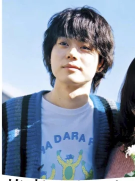
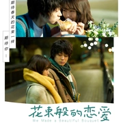
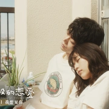
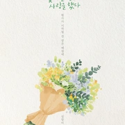
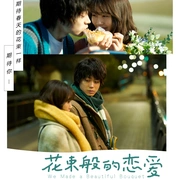
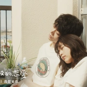
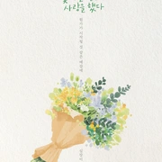

在东京京王线的明大前站，错过末班车的山音麦（菅田将晖 饰）和八谷绢（有村架纯 饰）偶然相识。两人都不擅长和人打交道，却在深夜咖啡馆聊起文学、电影和音乐，结果发现两人喜好惊人一致，就此互生好感，相处一段时间后确立恋人关系。随后两人开始了五年恋爱、同居、打工和找工作的生活。大学毕业后一边做自由职业者一边开始同居生活的他们，给捡回家的小猫取了名字，无论是经历了涉谷PARCO停业，还是综艺《SMAP×SMAP》迎来最终回，两人的生活目标都是将日常维持现状。然而，山音麦在现实面前不得不开始选择就职，进入公司终日忙碌，曾经的共同爱好和追求在现实的磋磨下逐渐出现裂缝，他们的爱情也呈现出迷茫前行的姿态
|  | 山音麦 |
| 演员:菅田将晖 | |
| 最初是个不善与人交际的大学生，梦想成为插画家，和女主八谷绢有很多共同爱好，由此和她一起度过了美好的5年时光。毕业之后，父亲不赞同他留在东京当插画师，便断了他的经济支持。在生活压力下，他进入公司成为一个终日忙碌的小职员，努力工作打拼，爱好和价值观悄然转变，最终和恋人渐行渐远。 | |
| 八谷绢 | |
| 演员:有村架纯 | |
| 喜欢独来独往，爱好小众的文艺女大学生。因错过末班车偶然与山音麦相识，两人拥有诸多共同爱好，因此成为恋人。她出身中产，虽然对于家里的生活方式、父母的观念深感厌倦，但这样的家庭给予了她做选择的底气，让她在生活的磋磨下仍旧能够保留自己的文艺情调和浪漫幻想。也正是这份文艺和浪漫，令她和山音麦的关系无法延续。 |
 




